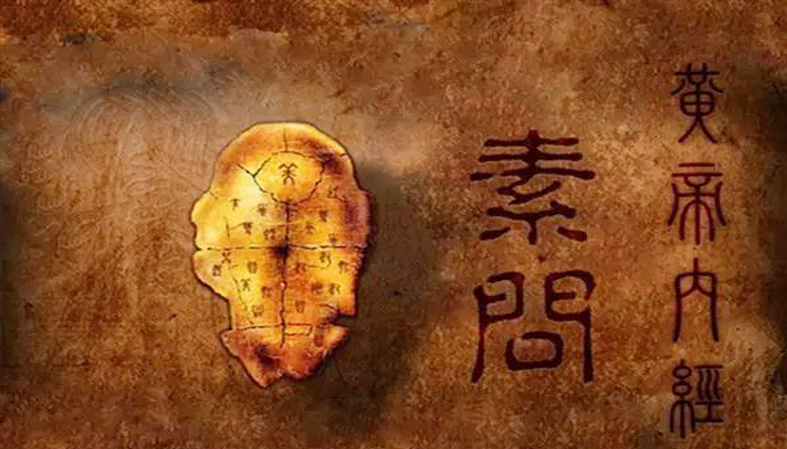
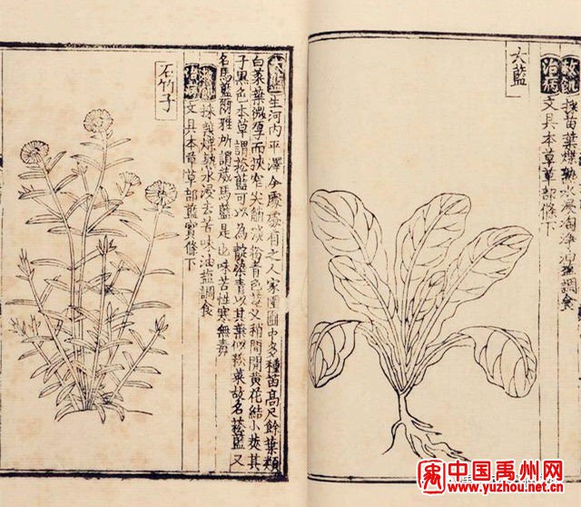
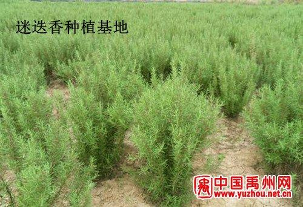
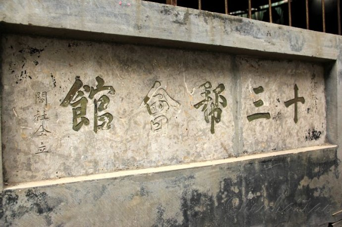
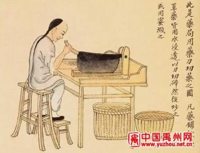
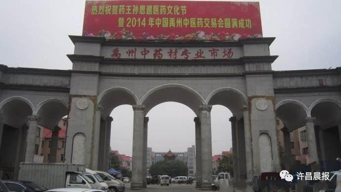
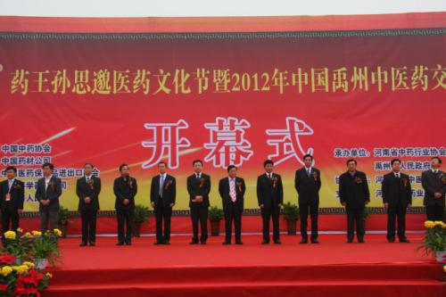

“药都”禹州
俗语有云：药不经禹州不香、医不见药王不妙,禹州是中华民族传统中医药发祥地之一。独特的地理优势、丰厚的医药资源、精到的医药技艺、融汇集散的医药市场不仅营造了当地强势的医药经济，也酝育了一方五彩滨纷的医药文化，“药都”之名，名副其实。
一、禹州医药文化的发展 禹州医药文化源远流长。纵观禹州的历史，禹州的医药文化经历了三个重要历史阶段：
１．唐宋始发期 从唐初一代药王孙思邈长年在此采药行医，(周宣帝时，思邈以王室多故，隐居太白山。（旧唐书 列传第一百四十一 方伎侯穆彝主编的民国《禹县志．卷三．山志》载：观山东五里曰太白山。一曰明山。乾隆邵志曰：州东北五十里又曰州东北明山有南北两崖，北为大太白，南为小太白。图书集成.职方典太白山与大鸿寨同接误)著书立说，先后撰写《千金要方》、《千金翼方》，传播医药文化，到宋代，形成古城寺以东以白芷、南星为代表的道地药材种植区域。大约经历五百年左右的时间，完成了从亦官亦民的医药文化现象到社会初级系统医药文化的过渡。
 孙思邈
孙思邈
２．明清兴盛期 从明太祖诏令药商云集禹州建立全国性中药材集散地、周定王《救荒本草》闻世到清乾隆年间形成春、秋、冬三季定期药材交易会。“内而全国十二省、外越西洋、南洋，东极高丽，北际库伦，皆舟车节转而至。”据史载，明清之际涌现出3名禹州籍太医和14名闻名全国有医学专著的名医。大约经历四百年左右的时间，完成了从区域医药文化的博采众长到世界范围的交流与融汇。 救荒本草
３．近年来创新繁荣期 从1996年９月，禹州中药材专业市场被国家卫生部、国家中医药管理局、国家工商行政管理局批准为全国１７家、河南省唯一的国家定点中药材专业市场到30万亩基地种植、10万药农药工生产加工、500多家药行经销、50家医疗单位3000名医疗人员从事医疗服务，已形成门类齐全、功能完备、科研创新、法制保障的医药文化体系。完成了从传统医药文化的改造提升到丰富医药文化的内涵，实现医药文化的社会价值。迷迭香种植区
二、禹州医药文化的特色
禹州历为郡州治所，以禹州本土药材闻名的“小禹州”享誉海内外。千百年来随着禹州医药文化的酝育、吸纳、丰富、创新，形成自已鲜明的特色：
１．古今器物洋溢着医药文化的魅力。禹州城内供奉孙思邈的药王祠，围绕药王祠形成的药行林立的药王祠古街就是医药文化在禹州深深扎根的历史见证。怀庆府的药商设立的怀帮会馆（始建清同治十年，同治十三年落成）、山西药商设立的山西会馆（清康熙年间始建、乾隆29年扩建，后道光二年、道光六年重修）、十三个行省联合设立的十三帮会馆（清同治十二年六月药行帮、药棚帮、甘草帮、党参帮、茯苓帮、江西帮、怀庆帮、祁州帮、陕西帮、四川帮、老河口帮、汉帮、宁波帮等13个药帮集资筹建。）江西药商1920年设立的江西会馆等足以说明明清以来禹州医药业的兴盛，如今尚存的那些金碧辉煌的殿宇、中西合壁的彩绘、雕梁画栋的戏楼亭台依然闪耀着昔日医药文化的风采。九十年代建成禹州中药材三条街市、商贸大世界内占７０００平米西药交易大厅和近年来兴建的３００亩大的中华药城，更是禹州医药文化繁荣昌盛的展现。就连制做丸散膏丹的制药工具，小到切刀、药臼、碾糟、探针、戥子，大到泡药的浸池、蒸药的转锅、煅烧矿物质药物的煅台以及后来自制的制药机械都显示着灿烂医药文化的结晶。一只指甲大小的槟榔能用手工切出１３０多刀，加工炮制后中药饮片薄如纸白如雪药味浓郁。严谨的制作工序、高超的手工工艺、药真价实的信誉都是医药界的劳动者创造的多元医药文化象征。 十三帮会馆
２．历代著述凝结着医药文化的成就。据王安邦《中州医林人物一览表》统计和历届禹州县志记载，禹州从南齐到清代有21位著名医药家，留下卷册浩繁的医学著作。南齐的左户部尚书、医学家褚澄撰有《医学论十篇》，世称《褚氏遗书》，本书系唐朝人从褚氏椁中发现石刻整理而成。宋嘉泰年间刊行流传。作者重视精血、津液学说，对血证及妇科病证的见解，为后世医家所重视，又撰《杂药方》２０卷。宋代刘翰马志的《开宝本草经》、苏颂的《本草图经》、唐慎微的《经史证类备急本草》明代刘宇著《安老怀幼书》４卷，明周定王朱橚著有《救荒本草》，清代张恕著有《合意录》，还继父学，著有《合意禄》，杨居午著《伤寒夺命》等。禹州近百名高级医师和一个执业药师群体发表了众多的医药论文著述，以及近年来任文正所著的《禹州中药志》、任大伟主编的《禹州中药传统炮制》和南林坡主编的《禹州地产药材》都是禹州人创造医药文化的结晶。 传统中药炮制
３．民风民俗显透着医药文化的氛围。（1）古街道、古庙会传承药香。以药成市，每年农历４月２０、８月２０、１１月２０古庙会以药兴盛。形成山货、中药、切药、丸散四大市场遍布市区大街小巷。其中，西关街为山货行，经营山岗药材，西大街、光明街、三官庙街、四角堂街、洪山庙街为中药行，经营各省道地药材，山林街、槐荫街为切药行，以饮片加工为主，八士坊街、黄家口、城隍庙街、旗毒庙街等为丸散业。（２）、行会制度形成信誉。约定俗成买卖双方成交后给经纪人各打３％的佣金，每年农历４月、８月和１１月的２０日分别为上期药材买卖双方资金结算时间，药材价格随行就市，“早晚价格不同，目下一言为定”成为当时禹州买卖双方一条不成文的规矩。（３）民间文学随处可见。民间传说广为流传。象神农氏从随州历山到禹州山区尝百草、孙思邈在禹州采药得道、以药王一针救两命、灵药救活唐公主、坐虎针龙的故事在当地可以说妇孺皆知。春节药行药铺贴上的药联，如“聚蓄百药，平康兆民”，“药圃无凡草，松窗有秘方”“东启明西长庚南极北斗谁为摘星子，春芍药夏牡丹秋菊冬梅我是探花郎”等等比比皆是。象采药歌更是在实践中创作的中药文化。如《阳春采药歌》中的“正月茵陈二月蒿，三月四月当柴烧；茵陈采收宜细嫩，摘起幼苗梗去掉.....蒲公英宜春季采，采时最好花刚开......桑树根皮早春挖，趁鲜洗净泥和沙；纵向皮部刀剖口，除去外皮扎成把.....白头翁根宜春采，挖起根茎及时晒；保留头部白茸毛，除去泥土须要卖。”药行掌柜为了让学徒记住药名，创作的巧嵌药名的散文和谜语。如：“卷柏林里，常山脚下，表碟石畔，柴胡村庄。满山红油菜象一个个红灯笼。牡丹园中，白果树旁，何首乌（屋）里，窗糊防风，中堂悬挂水墨画乌梅，青木香几案，黄柏木方桌．．．．．．谜语中有“牧童”（牵牛）、“空心树”（木通）、“军师难混”（苦参）：“一江春水向东流”（通大海）、“ 一枚獐脐四五斤”（沉香）等等。有的医药文学中还含有反外来侵略的积极意义。如有一篇记忆中药名的散文这样写道：“外洋侵扰我邦荆芥（境界）．．．．．．正使君子用武之地，请缨于四月十五半夏天，国老准奏后召开广芦荟（会），太阳起石（时）为（苇）先锋．．．．．马前有军师徐长卿开道，鞍后有黑丑、白丑二副将保驾．．．．．．猛士冲天雄风，何惧务竭化雨，直战到天南星落，老月石惊，天麻麻亮，立下十大功劳。当归日，跨海马，一条鞭，挂金灯，千里光，弃生地，返熟地，凯旋茴香（回乡）。军民同庆合欢，受将佩戴红花，荣封大将军，刻紫石英名永存。”可见，医药文化已融入到人们的生产生活之中 。 （４）择业就学因医药而兴。“不为名相，当为名医”的古训引导不少学子考入医药院校，落榜青年则另谋出路，有很多人走进卫校和医药职业学校，利用禹州医药之乡的优势，掌握一技之长，进药行，学医生，以药兴业，以文化人，用自已学得的职业技能，反哺医药，服务社会。中药材市场
４．经济社会膨胀着医药文化的效应。在禹州，以医药经济为载体形成的文化理念，引导着人们的生产和生活方式，随着医药经济的可持续发展，这种与当地经济与生俱来的医药文化，无处不在，无时不有。耳闻目染的环境，潜移默化的作用，愈来愈强烈地反作用于医药经济。在市委、市府引导下，农民种药的积极性空前高涨，全市已建成以小吕、梁北为重点的万亩杭白菊种植基地，以鸠山为重点的３万亩杜仲种植基地，千亩连片种植基地达到了１５个。医药企业都在做强做大，抢占科技高地。近年来突起的禹州市本草科技发展有限公司是按ＧＭＰ标准创办的高科技企业，年加工种植物药材１５００吨，主要进行各种生物有效成分提取、提纯专利产品的生产销售、新型工艺的开发研究和常规药材的大规模ＧＡＰ种植。２００２年６月由禹州市制药厂改制为禹州市药王制药有限公司，继承禹州深厚的中医药文化的底蕴，坚持“以人为本，以精为业，以质取胜，以诚服务”的文化理念，秉承和创新独特的炮制技艺，建立了ERP管理系统，在弘扬“药王”孙思邈中医药理论的特色和优势中做强做大。２００３年 １０月，通过了国家药品生产企业ＧＭＰ认证，当年被世界中医药学会确定为“重点推广产品”。主要生产“星禹”牌中药片剂、丸剂、散剂、胶剂、颗粒剂等９种剂型的１０３种产品，产品畅销全国２０多个省、市、自治区。药王集团企业文化不仅滋养了禹州医药文化，而且在激活禹州医药经济中创出了一条新路。2003年全市药材种植面积达到30.6万亩，仅中药材一项总值达到2.5亿。 医药文化节